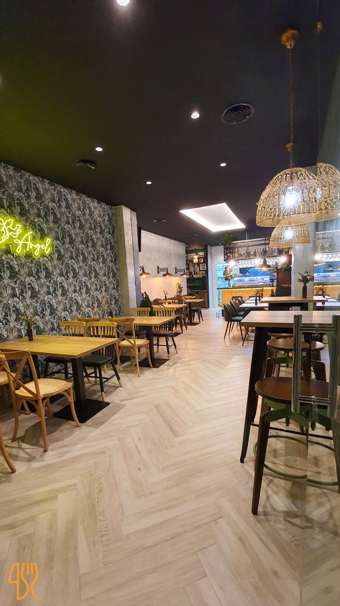
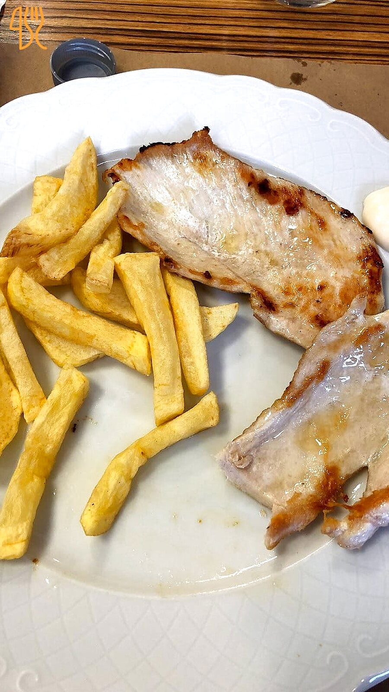
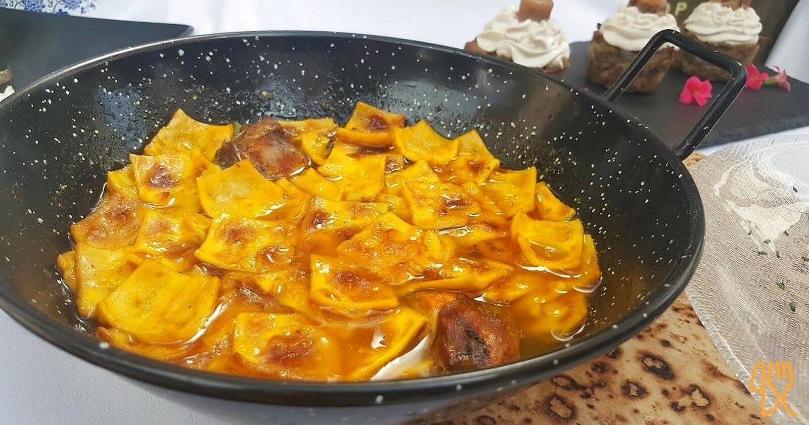
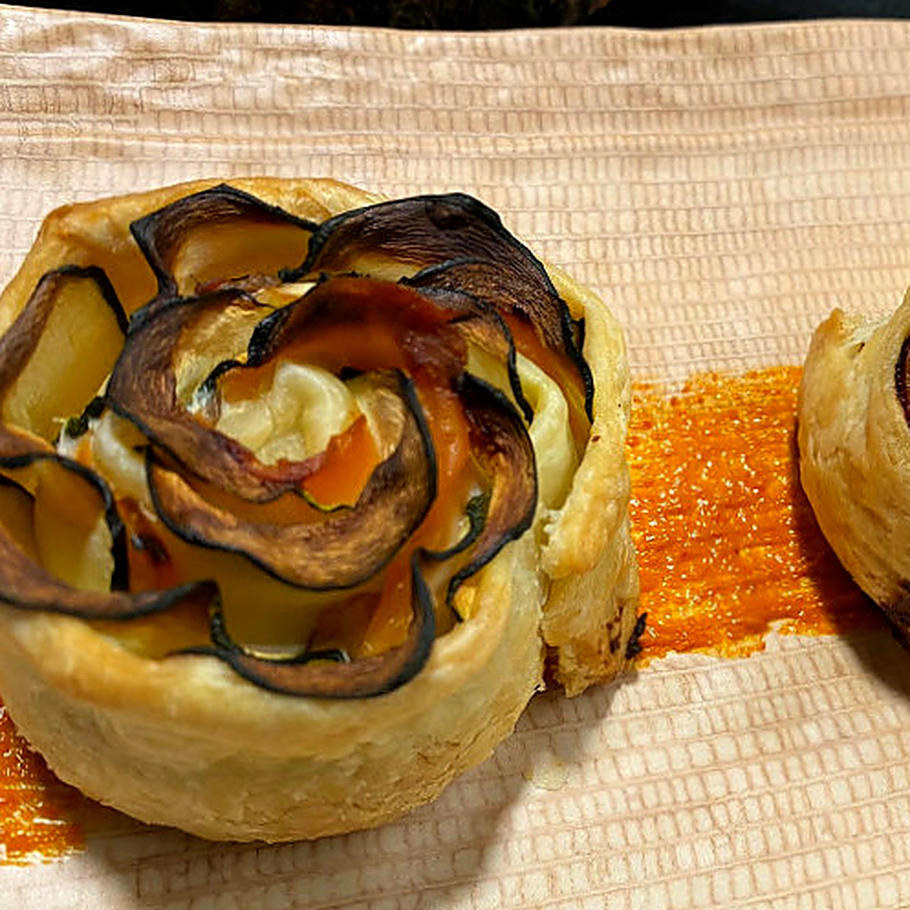
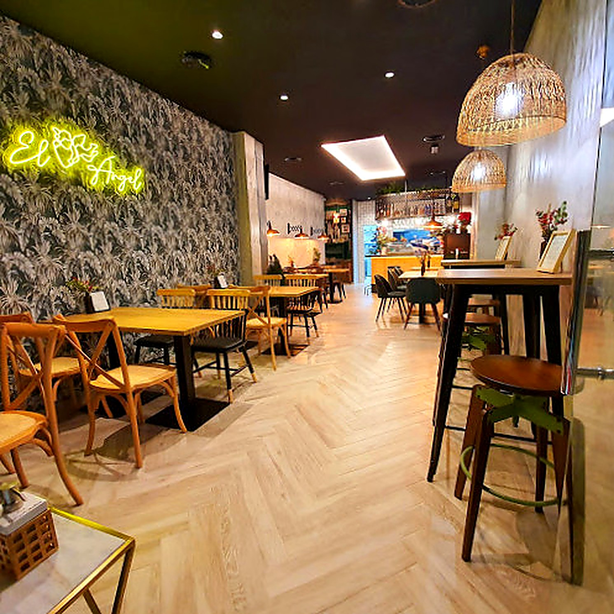

Galería
Una mirada al local.
11 fotos reales del local, la cocina y la sala — extraídas de la ficha pública del restaurante en carta.menu, mejoradas con upscale + sharpening cuando hacía falta.







Te lo enseñamos en persona